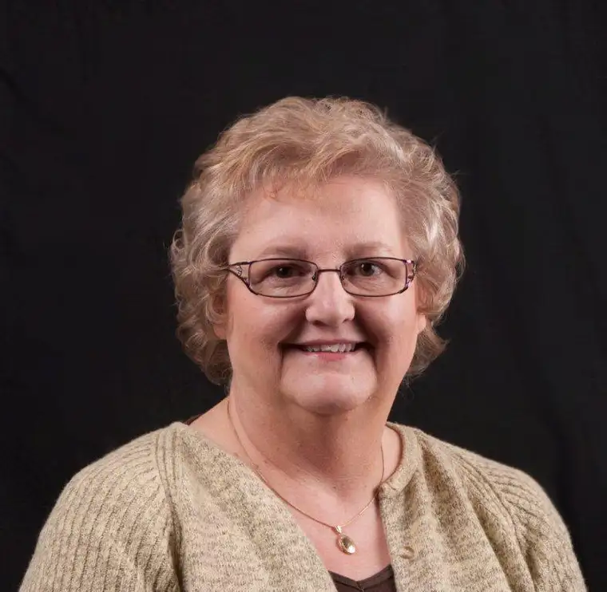

Remember Krista, my guest from last month? Now, as promised, I’d like to introduce one of the clients of her agency, Blue Cottage Agency, the sweet and talented author of historical fiction, Candace Simar.
 |
| Young Adult Author Candace Simar |
{kind=link}
Candace hails from Pequot Lakes, Minnesota, but she’s got a connection to North Dakota and the Sioux — a people dear to my heart as one who grew up among them. I’m going to slide over and let Candace introduce herself and her books. And then, if you sit tight, I’ll give you details on how you can win a copy of Candace’s latest book!
Beginnings and Where They Lead by Candace Simar
My childhood was spent on the family dairy farm in rural Otter Tail County. Being the middle child, I often felt too young to tag along with the older kids and too old to play with the younger ones. As a result, I spent a lot of time listening. I loved hearing my grandparents (who lived upstairs in our huge farmhouse) talk about the early days of the pioneers, when Minnesota was young. I was fascinated by their stories of passenger pigeons, dust storms, and the hardships of getting started in a new land.
I didn’t know these stories would become the basis for my historical novels. After all, I loved to read historical fiction. I never dreamed I would end up writing it.
In 2000 I discovered that my great-grandfather had driven the stagecoach to Fort Abercrombie in the years directly after the 1862 Sioux Uprising. When I told this family tidbit to our kids, I was shocked to realize they knew nothing about the Sioux Uprising—even though born and educated in Minnesota. My son challenged me to write a book about it. I couldn’t back down.
ABERCROMBIE TRAIL, my first novel about the Sioux Uprising, puts my protagonist as a witness while he drives the stage across Minnesota. Loosely based on my great-grandfather, Evan Jacobson is a Scandinavian immigrant who finds himself in the wrong place at the wrong time. The names of my characters are mostly family names and lots of family stories are tucked into my characters’ lives.
POMME DE TERRE, my second novel, investigates life in the aftermath of the Sioux Uprising, specifically at Fort Pomme de Terre near present day Elbow Lake, Minnesota. I loved resurrecting the history of the place and time.
BIRDIE continues the story of these characters a decade later during the grasshopper plagues of the 1870s. It investigates the lives of survivors and deals with issues of faith and family in the face of great hardship. The characters homestead in Otter Tail County, as my ancestors did. Yes, I am pulling on real history and family stories to propel my characters through the pages. (My sister says it is her favorite of the three published books.)
I’m currently working diligently on my fourth novel in the series, BLOOMING PRAIRIE. Watch for its release next summer.
Candace Simar is a poet and writer from Pequot Lakes, Minnesota. Check out her website at www.candacesimar.com. Her historical novels are available at Barnes & Noble, Zandbroz Books and Variety, and the Sandford Health System Gift Shop. They are also available online in hard copy and e-books.
Okay, so, if you’d like a copy of Candace’s latest, Birdie, all you have to do is leave a comment in the comments box, and share a link to this post with someone else on either Twitter or Facebook. (I’m going on the honor system). I will announce the winner in two weeks on Wednesday, February 8.